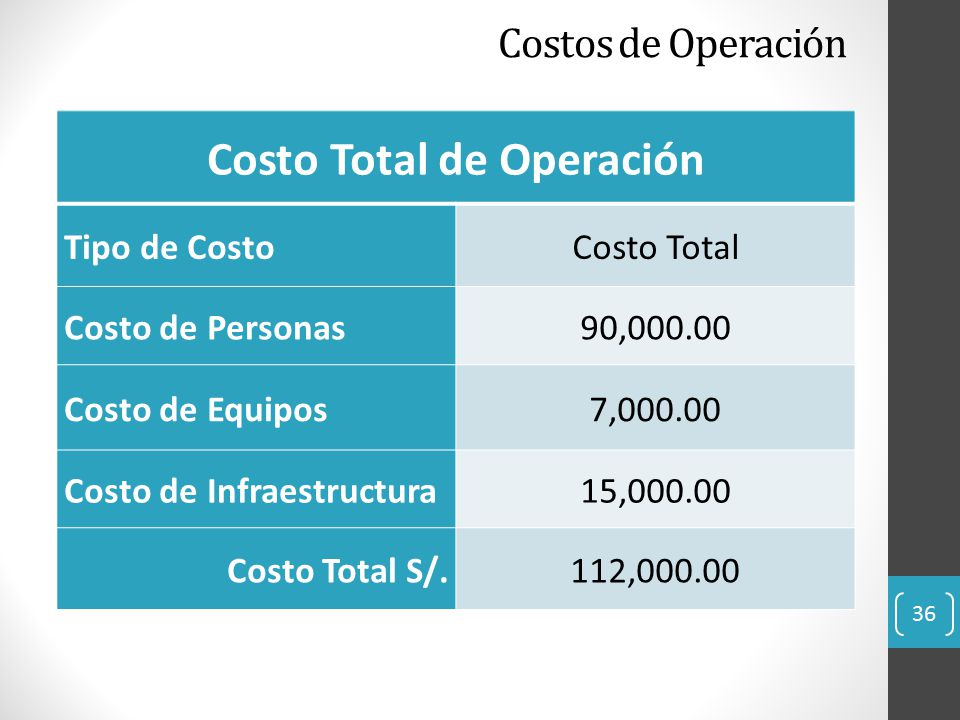

Costo total de operación
Los gastos incluyen todos los costos para operar, pero en general se pueden dividir en dos categorías principales: mantenimiento y administración. Los costos de mantenimiento se relacionan más con el producto (fabricación, mantenimiento y mejoras), mientras que los costos de administración se ocupan de la documentación y los empleados (nómina, contabilidad y gastos bancarios, alquiler de oficinas, etc.). Además, sus costos operativos se pueden dividir en otras categorías de remolque: costos fijos y costos variables.
